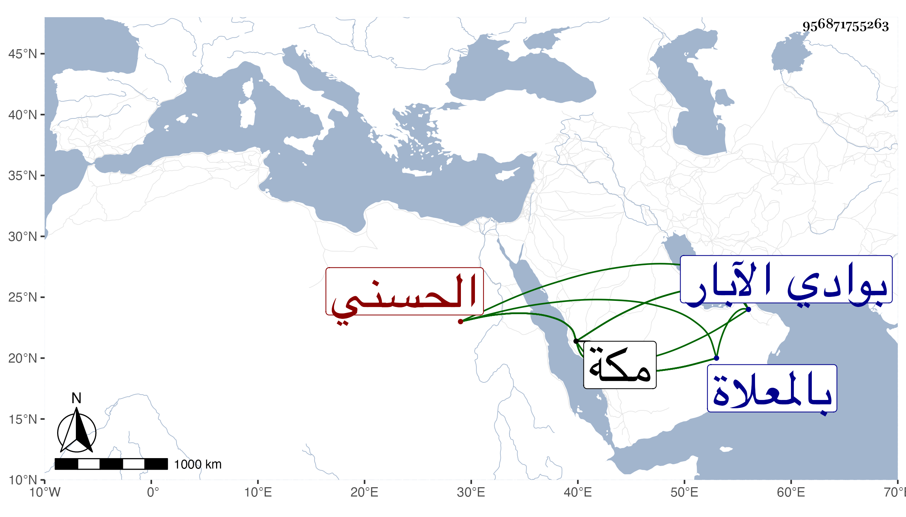

0902Sakhawi.DawLamic.ITO20230111-ara1.EIS1600.956871755263
Biography ID: 956871755263
17
بدير ويسمى أحمد بن سكر شهاب الدين الحسني نسبة لحسن بن عجلان لكون والده عتيقه كان زعيم الأقطار الحجازية وعميدها ووزيرها . ولد في سنة سبع أو تسع وثمانمائة بمكة . مات في جمادى الأولى سنة تسع وستين ، ورأيت من أرخه في التي بعدها بوادي الآبار من عمل مكة ، وحمل إلى مكة فغسل بالبيت الذي أنشأه صاحب مكة ، وصلى عليه عقب الصبح ودفن بالمعلاة على والده وكانت جنازته حافلة جدا ومشى الشريف فمن دونه معها إلى محل دفنه : ولم يخلف من أبناء جنسه مثله رياسة وحشمة ووجاهة وسناء وتواضعا وهو القائم بأعباء ولاية السيد الجمال محمد بن بركات بعد موت أبيه ثم مشى الواشي بينهما في أواخر سنة أربع وستين فنزع عن طاعته إلى موضع يقال له اليربوع فتبعه بعسكره فلم يقابله وأرسل يطلب الامان إلى أن أصلح بينهما عبد الكبير الحضرمي وغيره في جمادى الثانية سنة سبع وستين وحلف على الطاعة وكتب بذلك خطه عفا الله عنه .
